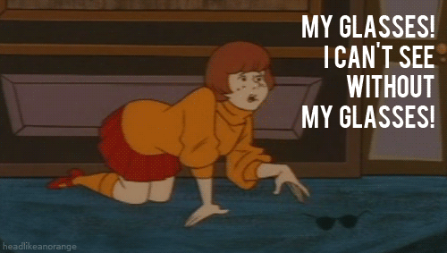

class: center, middle # Accessibility in one sprint .small[[@ONA Boston Lightening Talk](https://www.meetup.com/ONA-Boston/events/240919759/) | Tues, Aug 1, 2017] Daigo Fujiwara, .small[Web Developer, WBUR, http://wbur.org @DaigoFuji] <!--- Using Ignite style 20 slides x 15 sec = 5 min format --> --- class: center, middle, white ## *Caveat You should spend more than one sprint on web accessibility. <!--- Why did I want to do this talk? I wanted to demystify accessibility. --> --- class: center, middle, white, big-img  <!--- I am not an accessibility expert. You hear about ADA compliance law suit but spirit of ADA is to give more people access to information, contents that you create. --> --- class: center, middle ## **Americans with Disabilities Act** ("ADA") and **Section 508 of the Rehabilitation Act** --- class: center, middle, white, big-img  --- class: center, middle # Make the website **NOT inaccesible** <!--- Access to meaningful and effective contents on the Internet integral part of our modern life Universal Design As more and more of our social infrastructure is made available on the Internet - in some cases, exclusively online - access to information and electronic technologies is increasingly becoming the gateway civil rights issue for individuals with disabilities (Non-discrimination, Equal Opportunity). - Bobby Silverstein, the behind-the-scenes architect of the Americans with Disabilities Act (ADA) --> --- class: center, middle, inverse # Assistive Technology Screen Reader (blind), Zoom (low vision), Closed Captioning (deaf) etc. --- class: middle ## Screen Reader landscape - Apple Safari + [Voice Over](https://www.apple.com/accessibility/mac/vision/) - Windows IE + [JAWS](http://www.freedomscientific.com/Products/Blindness/JAWS) - Windows IE + [NVDA](https://www.nvaccess.org/) - [Orca](https://wiki.gnome.org/Projects/Orca) <!--- JAWS (Job Access With Speech) NVDA (NonVisual Desktop Access) Orca is open source --> --- class: center, middle, white, big-img ## Apple Voice Over  --- class: center, middle, white, big-img Turning it on  --- class: center, middle, white, big-img  --- class: middle ## VoiceOver Useful keys: VO key is "Control Option" by default - VO-D Dock - VO-B Read from beginning --- class: middle, inverse # Roter? - VO-U --- class: center, middle, white, big-img <video width="608" height="480" controls loop> <source src="img/roter.m4v" type="video/mp4"> <source src="img/roter.mov" type="video/ogg"> Your browser does not support the video tag. </video> --- class: center, middle # WCAG 2.0 [Web Content Accessibility Guidelines](https://www.w3.org/WAI/WCAG20/quickref/) <!--- WCAG PRINCIPLES - Perceivable (able to see/hear - not hidden) - Operable (able to use) - Understandable - Robust --> --- class: center, middle, big-img ## Alt tag  --- class: middle ### Accessible Rich Internet Applications (ARIA) - aria-required - aria-invalid - aria-describedby (Use id on a page) - aria-labeledby - aria-label --- class: middle ## Resources -W3C [Understanding WCAG 2.0](https://www.w3.org/TR/UNDERSTANDING-WCAG20/Overview.html) - Microsoft's [Inclusive Design](https://www.microsoft.com/en-us/design/inclusive) - Google [Accessibility](https://www.google.com/accessibility/for-developers.html) - [Perkins School for the Blind](http://www.perkins.org/get-involved/events/achieving-web-accessibility-make-sure-your-online-presence-works-for-everyone) --- class: middle, white ##In conclusion * Don't be afraid * Responsive Design and Mobile First approach helps Accessibility * Turn VoiceOver and check your site out --- class: middle, center, white, big-img  **Thank you!** <br>https://github.com/daigofuji/a11y-in-one-sprint @DaigoFuji on <i class="fa fa-twitter"></i> & <i class="fa fa-github"></i>